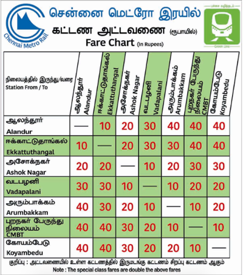

<ons-toolbar>
    <div class="center">Cost To Travel</div>
</ons-toolbar>
<div style="text-align: center; height:auto;" >
    <div class="center"><br/><br />
        Above fare details are refers between the metro stations, which are available for public to use. 
    </div>
</div>